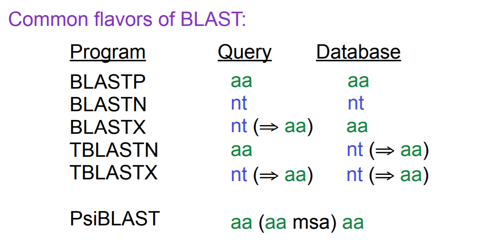
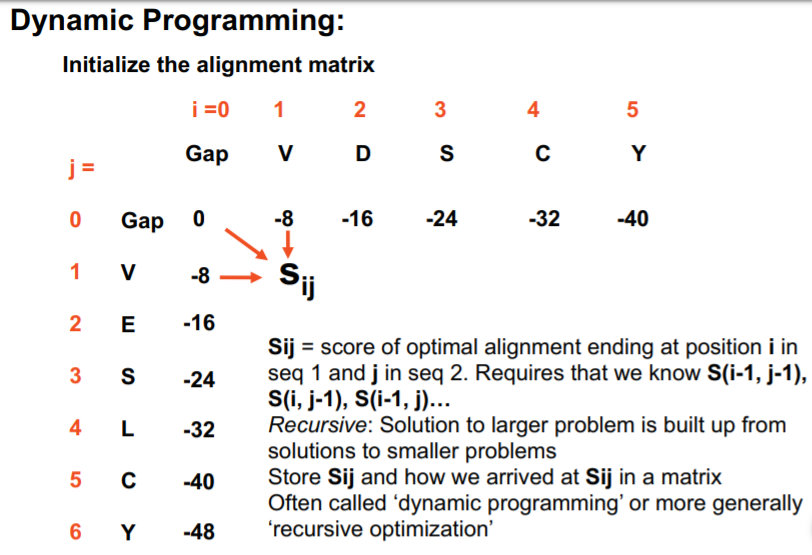
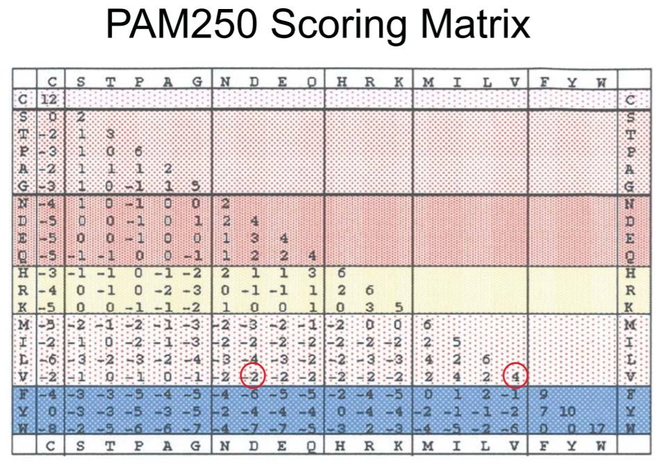
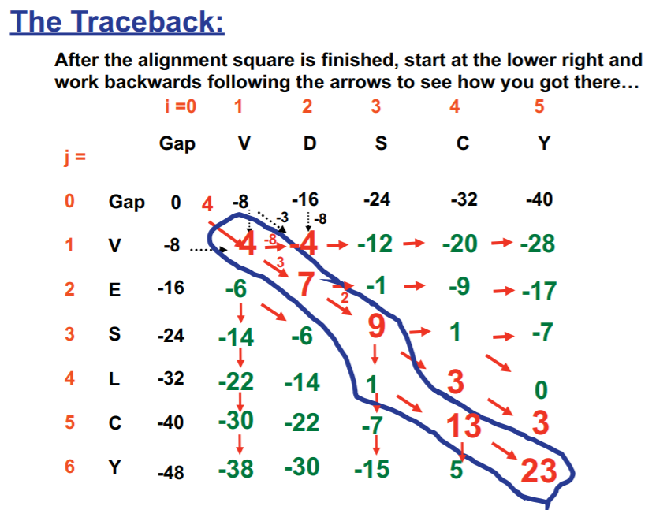

这篇文章主要讲述了不同的BLAST方法，为什么要用氨基酸序列进行比对，如何处理gap惩罚，并用动态规划的方法全局比对找到最优解，然后回溯获得比对结果，同时可以应用到半全局比对和局部比对。这其中需要注意的是PAM matrix的一些特点，这个评分矩阵的设计非常有内涵，最后提了一下我们需要通过DNA序列进化来知道如何设计这样的评分系统的是合理的，而DNA进化序列实际上是一条马尔科夫链。
不同的BLAST方法

如果惩罚项为-2，那么它不会得到低于2/3的匹配率，因为得分会重置为0，考虑1，1，-2。这会导致一些问题，比如说我们知道密码子具有简并性，那么直接有些情况下考虑密码子对应的氨基酸直接做比对可能会更合适。
1.假设一些黑猩猩的EST，且没有黑猩猩基因组。 因此将针对人类的基因搜索它们。会怎么做？
黑猩猩与人类基因组相似度98％，非常高。所以直接进行基因比对或氨基酸比对都能很容易找到相应的位置，BLASTN or BLASTX, either is ok. 但是如果这个序列恰好来自UTR，那只能用BLASTN。
2.如果它是针对小鼠基因组和人类EST呢？BLASTN，BLASTX， TBLASTX？
通常在核苷酸水平上，小鼠外显子与人外显子大约80％相同。TBLASTX。 翻译EST，翻译基因组，搜索这些氨基酸。因为发生的许多变异都位于不影响氨基酸的密码子的第三位， 因此，与核苷酸搜索相比，可以通过翻译搜索找到更完整的匹配项。
BLASTX：对于这个问题而言，可以针对小鼠的蛋白质组进行搜索， 这取决于基因组的注释程度。小鼠有很好的注释， 几乎所有蛋白质都可能是已知的。 但是，如果您正在寻找一些更晦涩的生物，变色龙基因组之类的东西，并且没有对其进行很好的注释，那么可能直接用基因组再翻译成aa能做得更好。
不同比对方法
- 局部比对local alignment，无需尝试对齐整条序列，只需发现高度相似的较小区域。
- 全局比对global alignment，两种蛋白质从头到尾进行比对时，假定这两种蛋白质是同源的，并且实际上它们没有序列的主要插入或重排。
- 半全局比对semi-global alignment，是全局比对的部分变形。
gap 惩罚
Gaps(aka “indels”)
- linear gap penalty
$\gamma (n)=nA$,
$n=$no. of gaps, $A=$gap penalty
- “Affine” gap penalty
$W_n=G+n\gamma$,
$n=$ no. of gaps, $\gamma=$gap extension penalty, and $G=$gap opening penalty
全局比对
动态规划以得到最优全局比对

Global alignments: Needleman-Wunsch-Sellers
$$
S_{ij}= max\ {S_{i-1, j-1}+\sigma(x_i,y_j), S_{i-1, j}-A, S_{i, j-1}-A}
$$
如果是从上到下或从左到右，都代表这里有gap，A表示gap带来的惩罚。
| One-letter symbol | Three-letter symbol | Amino acid | 中文 |
|---|---|---|---|
| A | Ala | alanine | 丙氨酸 |
| B | Asx | aspartic acid or asparagine | 天冬氨酸或天冬酰胺 |
| C | Cys | cysteine | 半胱胺酸 |
| D | Asp | aspartic acid | 天冬氨酸 |
| E | Glu | glutamic acid | 谷氨酸 |
| F | Phe | phenylalanine | 苯丙氨酸 |
| G | Gly | glycine | 甘氨酸 |
| H | His | histidine | 组胺酸 |
| I | Ile | isoleucine | 异亮氨酸 |
| K | Lys | lysine | 赖胺酸 |
| L | Leu | leucine | 亮氨酸 |
| M | Met | methionine | 甲硫胺酸 |
| N | Asn | asparagine | 天冬酰胺 |
| P | Pro | proline | 脯氨酸 |
| Q | Gln | glutamine | 谷氨酰胺 |
| R | Arg | arginine | 精氨酸 |
| S | Ser | serine | 丝氨酸 |
| T | Thr | threonine | 苏氨酸 |
| U* | Sec | selenocysteine | 硒代半胱氨酸 |
| V | Val | valine | 缬氨酸 |
| W | Trp | tryptophan | 色氨酸 |
| X** | Xaa | unknown or ‘other’ amino acid | 未知氨基酸 |
| Y | Tyr | tyrosine | 酪氨酸 |
| Z | Glx | glutamic acid or glutamine | 谷氨酸或谷氨酰胺 |
对于(Percent Accepted Mutations) PAM250 scoring matrix

- 这是一个对称矩阵
例如，缬氨酸valine与亮氨酸leucine匹配，它与亮氨酸与缬氨酸匹配相同，评分对称。
- 对角线上不一样，2-17
例如，色氨酸W评分17，半胱氨酸C评分12，而丝氨酸S评分2。色氨酸具有与其他侧链交互的能力，半胱氨酸对蛋白质的三维结构非常非常重要。所以不会偶然将色氨酸和半胱氨酸放入蛋白质中，或者只在需要它们时，才有足够的空间放入它们。
- 非对角线元素也可能是正的得分
残基通过侧链的相似化学进行了分组。碱性残基，组氨酸histidine，精氨酸arginine和赖氨酸lysine，表格中HRK。酸性残基，天冬氨酸aspartate和谷氨酸glutamate，以及天冬酰胺asparagine和谷氨酰胺glutamine，表格中DENQ。
比如说注意D到E为具有正分数3，几乎与D到D或E到E加4分一样好，这是基于在进化中通常用天冬氨酸D替代谷氨酸E的认识。所以它在某种程度上是化学成分相似度的得分。

然后用动态规划的方法，并记录得到最高评分的路线，找到最高评分进行回溯即可。
“Life must be lived forwards and understood backwards.”
– Søren Kierkegaard
半全局比对和局部比对
允许序列在任何一端悬垂而不会受到惩罚，通常可以更好地比对长度不同的同源序列，与以前相同的算法，除了
- 将矩阵$S_{i,0}$和$S_{0,j}$的边初始化为$0$
- 不要求追溯始于$S_{m,n}$，而是允许它从最高分开始于底行或最右列
Smith-Waterman Local Alignment
用动态规划的方法解决局部比对并允许有gap，同样的方法除了
- 相似度矩阵必须包含不匹配的负值
- 当为得分矩阵中的位置计算的值是负数，该值设置为零，这将终止对齐或理解为重新开始比对。
总体来讲，计分系统应支持匹配相同或相关氨基酸，并对匹配不良和缺口进行处罚。
这需要知道在相关蛋白质中发现特定氨基酸对的频率与偶然发生的频率比，还需要在相关蛋白质中发现缺口（插入/缺失）相对于不同氨基酸对的频率。
DNA序列进化
Markov Model (aka Markov Chain)
马尔科夫链
随机过程Stochastic Process：
- 一个随机任意的过程 random process，或
- 一个来自随机变量random variables的序列
A discrete stochastic process $X_1, X_2, X_3, …$, which has the Markov property:
For all $x_i$, all $j$, all $n$,
$$P\left(X_{n+1}=j | X_{1}=x_{1}, X_{2}=x_{2}, \ldots X_{n}=x_{n}\right)=P\left(X_{n+1}=j | X_{n}=x_{n}\right)$$
A random process which has the property that the future (next state) is conditionally independent of the past given the present (current state).
就是当前时刻的状态只与前一时刻的状态有关。